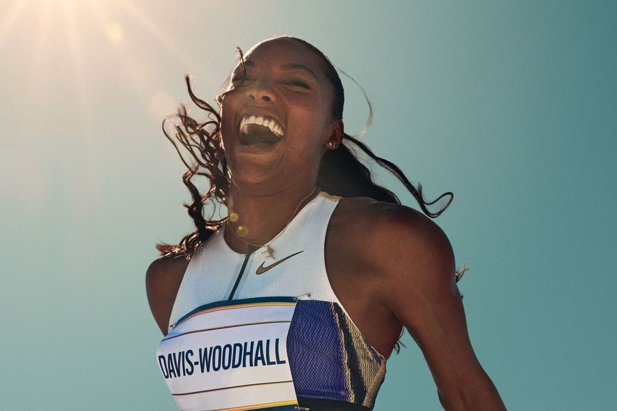
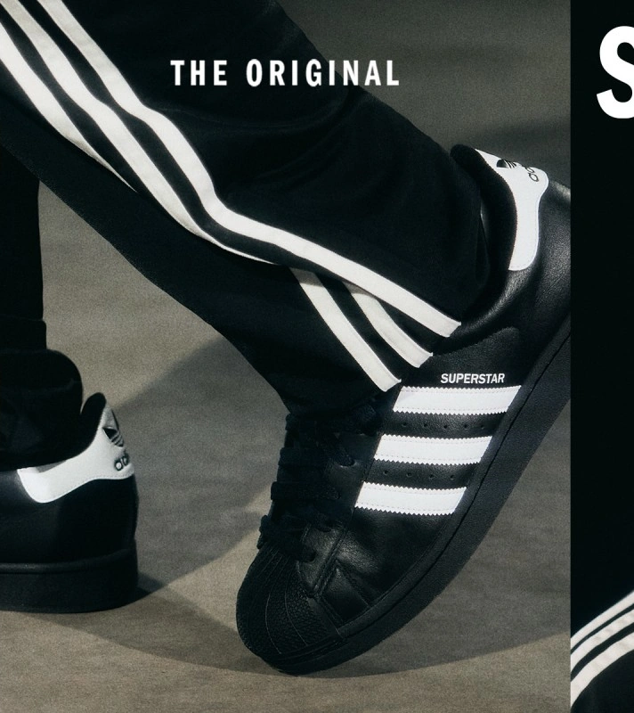

NIKE
SPORTA ASOCIĀCIJAS

ADIDAS
IKDIENAS STILA ASOCIĀCIJAS
VS
PATĒRĒTĀJU UZTVERE UN ZĪMOLU POZICIONĒJUMS
Cīņa par vietu
patērētāja uztverē
Arta Lazdāne un Toms Vildžūns
LU · Patērētāju uzvedība un mārketinga stratēģija